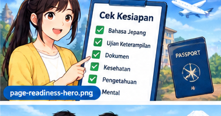

Periksa persiapanmu satu per satu. Jika masih banyak yang belum dicentang, gunakan Roadmap untuk menentukan langkah berikutnya.

Centang hal yang sudah kamu siapkan. Skor ini hanya indikator belajar, bukan penentuan kelayakan resmi.
Mulai dari checklist di bawah.